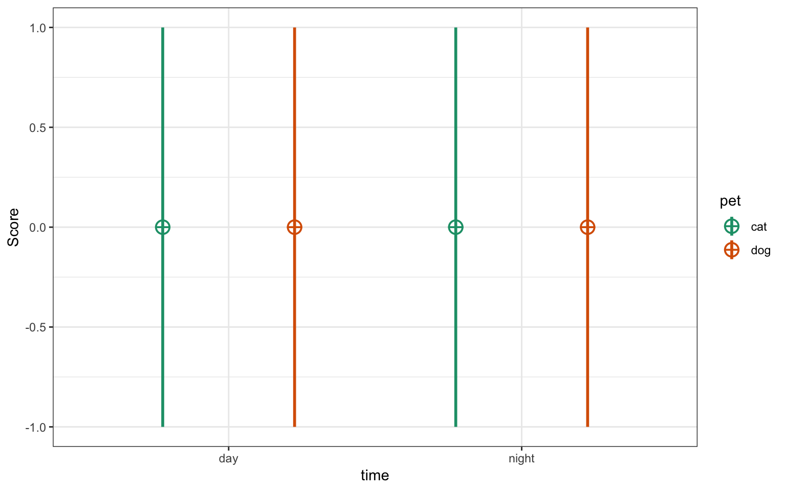
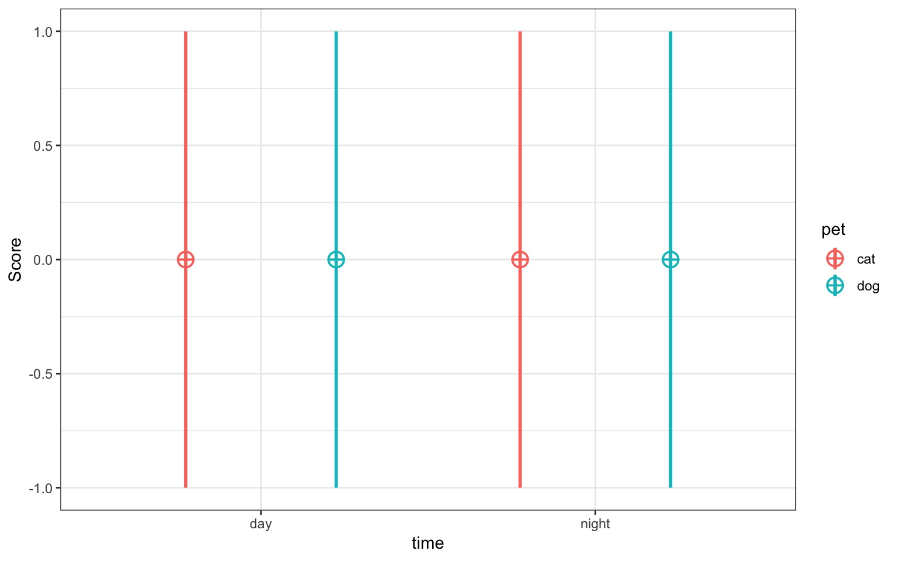
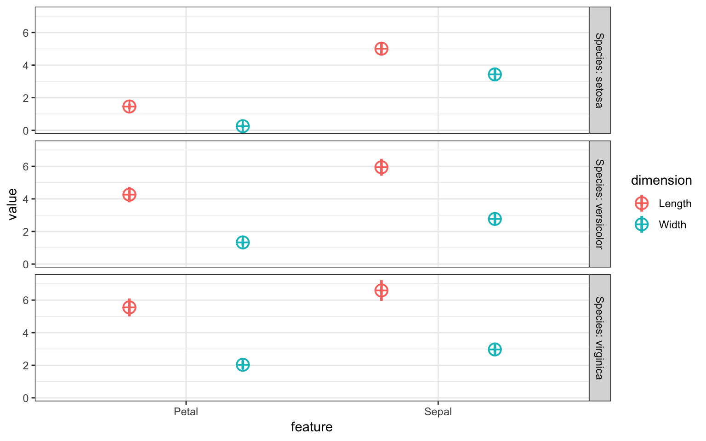

It is useful to be able to simulate data with a specified structure. The faux package provides some functions to make this process easier. See the package website for more details.
Installation
You can install the newest version of faux from GitHub with:
devtools::install_github("debruine/faux", build_vignettes = TRUE)Because faux is still in early development, some features will break in future versions. Include sessioninfo::package_info() in your script to list the versions of all loaded packages.
sim_design
This function creates a dataset with a specific between- and/or within-subjects design. see vignette
For example, the following creates a 2w*2b design with 100 observations in each cell. The between-subject factor is pet with two levels (cat and dog). The within-subject factor is time with two levels (day and night). The mean for the cat_day cell is 10, the mean for the cat_night cell is 20, the mean for the dog_day cell is 15, and the mean for the dog_night cell is 25. All cells have a SD of 5 and all within-subject cells are correlated r = 0.5. The resulting data has exactly these values (set empirical = FALSE to sample from a population with these values). Set plot = TRUE to show a plot of means and SDs.
between <- list("pet" = c("cat" = "Cat Owners", "dog" = "Dog Owners"))
within <- list("time" = c("day", "night"))
mu <- data.frame(
cat = c(10, 20),
dog = c(15, 25),
row.names = within$time
)
df <- sim_design(within, between,
n = 100, mu = mu, sd = 5, r = .5,
empirical = TRUE, plot = TRUE)
| pet | n | var | day | night | mean | sd |
|---|---|---|---|---|---|---|
| cat | 100 | day | 1.0 | 0.5 | 10 | 5 |
| cat | 100 | night | 0.5 | 1.0 | 20 | 5 |
| dog | 100 | day | 1.0 | 0.5 | 15 | 5 |
| dog | 100 | night | 0.5 | 1.0 | 25 | 5 |
You can plot the data from sim_design() and swap the factor visualisations. see vignette
p1 <- plot_design(df)
p2 <- plot_design(df, "pet", "time")
cowplot::plot_grid(p1, p2, nrow = 2, align = "v")
sim_df
This function produces a data table with the same distributions and correlations as an existing data table. It only returns numeric columns and simulates all numeric variables from a continuous normal distribution (for now). see vignette
For example, the following code creates a new sample from the built-in dataset iris with 50 observations of each species.
new_iris <- sim_df(iris, 50, between = "Species") 
Simulated iris dataset
sim_mixed_cc
This function produces a data table for a basic cross-classified design with random intercepts for subjects and items.
For example, the following code produces the data for 100 subjects responding to 50 items where the response has an overall mean (grand_i) of 10. Subjects vary in their average response with an SD of 1, items vary in their average response with an SD of 2, and the residual error term has an SD of 3.
dat <- sim_mixed_cc(
sub_n = 100, # subject sample size
item_n = 50, # item sample size
grand_i = 10, # overall mean of the score
sub_sd = 1, # SD of subject random intercepts
item_sd = 2, # SD of item random intercepts
error_sd = 3 # SD of residual error
)You can then see how changing these numbers affects the random effects in an intercept-only mixed effects model.
lme4::lmer(y ~ 1 + (1 | sub_id) + (1 | item_id), data = dat) %>%
broom.mixed::tidy() %>%
knitr::kable(digits = 3)| effect | group | term | estimate | std.error | statistic |
|---|---|---|---|---|---|
| fixed | NA | (Intercept) | 10.073 | 0.311 | 32.388 |
| ran_pars | sub_id | sd__(Intercept) | 1.016 | NA | NA |
| ran_pars | item_id | sd__(Intercept) | 2.058 | NA | NA |
| ran_pars | Residual | sd__Observation | 2.937 | NA | NA |
sim_mixed_df
This function uses lme4::lmer() to get subject, item and error SDs from an existing dataset and simulates a new dataset with the specified number of subjects and items with distributions drawn from the example data.
new_dat <- sim_mixed_df(fr4,
sub_n = 100,
item_n = 50,
dv = "rating",
sub_id = "rater_id",
item_id = "face_id")rnorm_multi
This function makes multiple normally distributed vectors with specified parameters and relationships. see vignette
For example, the following creates a sample that has 100 observations of 3 variables, drawn from a population where A has a mean of 0 and SD of 1, while B and C have means of 20 and SDs of 5. A correlates with B and C with r = 0.5, and B and C correlate with r = 0.25.
dat <- rnorm_multi(
n = 100,
mu = c(0, 20, 20),
sd = c(1, 5, 5),
r = c(0.5, 0.5, 0.25),
varnames = c("A", "B", "C"),
empirical = FALSE
)| n | var | A | B | C | mean | sd |
|---|---|---|---|---|---|---|
| 100 | A | 1.00 | 0.51 | 0.55 | 0.08 | 1.01 |
| 100 | B | 0.51 | 1.00 | 0.28 | 19.90 | 4.93 |
| 100 | C | 0.55 | 0.28 | 1.00 | 20.58 | 5.02 |
rnorm_pre
This function creates a vector that has a specified correlation with an existing vector.
# create a pre-existing vector x
x <- rnorm(100, 0, 1)
# create a vector y with exactly mean=0, sd=1, and r(x,y)=0.5
y <- rnorm_pre(x, mu = 0, sd = 1, r = 0.5, empirical = TRUE)
list(
mean = mean(y),
sd = sd(y),
r = cor(x,y)
) %>% str()
#> List of 3
#> $ mean: num -1.33e-17
#> $ sd : num 1
#> $ r : num 0.5If empirical = FALSE (the default), this resulting vector is sampled from a population with the specified parameters (but won’t have exactly those properties).
Distribution of 1000 samples from rnorm_pre
Additional functions
messy
Sometimes you want to mess up a dataset for teaching (thanks for the idea, Emily!). The messy() function will replace prop proportion of the data in the specified columns with the value of replace (defaults to NA).
# replace 10% of Species with NA
iris2 <- messy(iris, 0.1, "Species")
# replace 10% of petal.Width adn Sepal.Width with NA
iris3 <- messy(iris, 0.1, "Petal.Width", "Sepal.Width")
# replace 50% of columns 1-2 with NA
iris4 <- messy(iris, 0.5, 1:2)
# replace 50% of Species with "NOPE"
iris5 <- messy(iris, 0.5, "Species", replace = "NOPE")get_params
If you want to check your simulated stats or just describe an existing dataset, use get_params().
get_params(iris)| n | var | Sepal.Length | Sepal.Width | Petal.Length | Petal.Width | mean | sd |
|---|---|---|---|---|---|---|---|
| 150 | Sepal.Length | 1.00 | -0.12 | 0.87 | 0.82 | 5.84 | 0.83 |
| 150 | Sepal.Width | -0.12 | 1.00 | -0.43 | -0.37 | 3.06 | 0.44 |
| 150 | Petal.Length | 0.87 | -0.43 | 1.00 | 0.96 | 3.76 | 1.77 |
| 150 | Petal.Width | 0.82 | -0.37 | 0.96 | 1.00 | 1.20 | 0.76 |
You can also group your data and change the digits to round.
get_params(iris,
between = "Species",
digits = 3)| Species | n | var | Sepal.Length | Sepal.Width | Petal.Length | Petal.Width | mean | sd |
|---|---|---|---|---|---|---|---|---|
| setosa | 50 | Sepal.Length | 1.00 | 0.74 | 0.27 | 0.28 | 5.01 | 0.35 |
| setosa | 50 | Sepal.Width | 0.74 | 1.00 | 0.18 | 0.23 | 3.43 | 0.38 |
| setosa | 50 | Petal.Length | 0.27 | 0.18 | 1.00 | 0.33 | 1.46 | 0.17 |
| setosa | 50 | Petal.Width | 0.28 | 0.23 | 0.33 | 1.00 | 0.25 | 0.11 |
| versicolor | 50 | Sepal.Length | 1.00 | 0.53 | 0.75 | 0.55 | 5.94 | 0.52 |
| versicolor | 50 | Sepal.Width | 0.53 | 1.00 | 0.56 | 0.66 | 2.77 | 0.31 |
| versicolor | 50 | Petal.Length | 0.75 | 0.56 | 1.00 | 0.79 | 4.26 | 0.47 |
| versicolor | 50 | Petal.Width | 0.55 | 0.66 | 0.79 | 1.00 | 1.33 | 0.20 |
| virginica | 50 | Sepal.Length | 1.00 | 0.46 | 0.86 | 0.28 | 6.59 | 0.64 |
| virginica | 50 | Sepal.Width | 0.46 | 1.00 | 0.40 | 0.54 | 2.97 | 0.32 |
| virginica | 50 | Petal.Length | 0.86 | 0.40 | 1.00 | 0.32 | 5.55 | 0.55 |
| virginica | 50 | Petal.Width | 0.28 | 0.54 | 0.32 | 1.00 | 2.03 | 0.27 |
make_id
It is useful for IDs for random effects (e.g., subjects or stimuli) to be character strings (so you don’t accidentally include them as fixed effects) with the same length s(o you can sort them in order like S01, S02,…, S10 rather than S1, S10, S2, …) This function returns a list of IDs that have the same string length and a specified prefix.
make_id(n = 10, prefix = "ITEM_")
#> [1] "ITEM_01" "ITEM_02" "ITEM_03" "ITEM_04" "ITEM_05" "ITEM_06" "ITEM_07"
#> [8] "ITEM_08" "ITEM_09" "ITEM_10"You can also manually set the number of digits and set n to a range of integers.
make_id(n = 10:20, digits = 3)
#> [1] "S010" "S011" "S012" "S013" "S014" "S015" "S016" "S017" "S018" "S019"
#> [11] "S020"long2wide
Convert a data table made with faux from long to wide.
between <- list("pet" = c("cat", "dog"))
within <- list("time" = c("day", "night"))
df_long <- sim_design(within, between, long = TRUE)
df_wide <- long2wide(df_long)| id | pet | day | night |
|---|---|---|---|
| S001 | cat | -0.4716967 | -0.5028944 |
| S002 | cat | -0.4883249 | -0.4010576 |
| S003 | cat | -0.3179796 | 0.2211064 |
| S004 | cat | -0.6062085 | 0.7765950 |
| S005 | cat | 1.0692633 | -1.6403173 |
| S006 | cat | -0.9743776 | -0.2294919 |
If you have a data table not made by faux, you need to specify the within-subject columns, the between-subject columns, the DV column, and the ID column.
# make a long data table
df_long <- expand.grid(
sub_id = 1:10,
A = c("A1", "A2"),
B = c("B1", "B2")
)
df_long$C <- rep(c("C1", "C2"), 20)
df_long$score <- rnorm(40)
# convert it to wide
df_wide <- long2wide(df_long, within = c("A", "B"),
between = "C", dv = "score", id = "sub_id")| sub_id | C | A1_B1 | A1_B2 | A2_B1 | A2_B2 |
|---|---|---|---|---|---|
| 1 | C1 | 0.5155250 | 0.0236974 | -0.8559099 | -0.2476252 |
| 2 | C2 | 1.7126586 | -0.3393816 | -0.7922569 | 0.6288110 |
| 3 | C1 | -1.8289396 | -0.5809952 | -1.3774323 | -0.0658665 |
| 4 | C2 | 1.7320068 | -0.5330786 | 1.0126400 | -1.3936488 |
| 5 | C1 | -0.1980841 | 0.1887755 | 0.7556978 | 0.0951162 |
| 6 | C2 | -1.7309580 | 1.1195109 | 0.3883780 | -1.2426219 |
wide2long
You can convert a data table made by faux from wide to long easily.
between <- list("pet" = c("cat", "dog"))
within <- list("time" = c("day", "night"))
df_wide <- sim_design(within, between, long = FALSE)
df_long <- wide2long(df_wide)| id | pet | time | y |
|---|---|---|---|
| S001 | cat | day | 1.3290422 |
| S002 | cat | day | 0.1087942 |
| S003 | cat | day | 0.2573105 |
| S004 | cat | day | 0.1548801 |
| S005 | cat | day | -0.4347730 |
| S006 | cat | day | 0.5253602 |
If you have a data table not made by faux, you need to specify the within-subject factors and columns, and specify the names of the ID and DV columns to create.
long_iris <- wide2long(
iris,
within_factors = c("feature", "dimension"),
within_cols = 1:4,
dv = "value",
id = "flower_id"
)| Species | flower_id | feature | dimension | value |
|---|---|---|---|---|
| setosa | S001 | Sepal | Length | 5.1 |
| setosa | S002 | Sepal | Length | 4.9 |
| setosa | S003 | Sepal | Length | 4.7 |
| setosa | S004 | Sepal | Length | 4.6 |
| setosa | S005 | Sepal | Length | 5.0 |
| setosa | S006 | Sepal | Length | 5.4 |
get_design_long
Once you have a dataframe in long format, you can recover the design from it.
design <- get_design_long(long_iris, dv = "value", id = "flower_id")
json_design
Then you can use json_design() to save the design to a file or view it in JSON format (condensed or pretty).
json_design(design)
{"within":{"feature":{"Petal":"Petal","Sepal":"Sepal"},"dimension":{"Length":"Length","Width":"Width"}},"between":{"Species":{"setosa":"setosa","versicolor":"versicolor","virginica":"virginica"}},"dv":{"value":"value"},"id":{"flower_id":"flower_id"},"n":{"setosa":50,"versicolor":50,"virginica":50},"mu":{"setosa":{"Petal_Length":1.46,"Sepal_Length":5.01,"Petal_Width":0.25,"Sepal_Width":3.43},"versicolor":{"Petal_Length":4.26,"Sepal_Length":5.94,"Petal_Width":1.33,"Sepal_Width":2.77},"virginica":{"Petal_Length":5.55,"Sepal_Length":6.59,"Petal_Width":2.03,"Sepal_Width":2.97}},"sd":{"setosa":{"Petal_Length":0.17,"Sepal_Length":0.35,"Petal_Width":0.11,"Sepal_Width":0.38},"versicolor":{"Petal_Length":0.47,"Sepal_Length":0.52,"Petal_Width":0.2,"Sepal_Width":0.31},"virginica":{"Petal_Length":0.55,"Sepal_Length":0.64,"Petal_Width":0.27,"Sepal_Width":0.32}},"r":{"setosa":[[1,0.27,0.33,0.18],[0.27,1,0.28,0.74],[0.33,0.28,1,0.23],[0.18,0.74,0.23,1]],"versicolor":[[1,0.75,0.79,0.56],[0.75,1,0.55,0.53],[0.79,0.55,1,0.66],[0.56,0.53,0.66,1]],"virginica":[[1,0.86,0.32,0.4],[0.86,1,0.28,0.46],[0.32,0.28,1,0.54],[0.4,0.46,0.54,1]]}}
json_design(design, pretty = TRUE)
{
"within": {
"feature": {
"Petal": "Petal",
"Sepal": "Sepal"
},
"dimension": {
"Length": "Length",
"Width": "Width"
}
},
"between": {
"Species": {
"setosa": "setosa",
"versicolor": "versicolor",
"virginica": "virginica"
}
},
"dv": {
"value": "value"
},
"id": {
"flower_id": "flower_id"
},
"n": {
"setosa": 50,
"versicolor": 50,
"virginica": 50
},
"mu": {
"setosa": {
"Petal_Length": 1.46,
"Sepal_Length": 5.01,
"Petal_Width": 0.25,
"Sepal_Width": 3.43
},
"versicolor": {
"Petal_Length": 4.26,
"Sepal_Length": 5.94,
"Petal_Width": 1.33,
"Sepal_Width": 2.77
},
"virginica": {
"Petal_Length": 5.55,
"Sepal_Length": 6.59,
"Petal_Width": 2.03,
"Sepal_Width": 2.97
}
},
"sd": {
"setosa": {
"Petal_Length": 0.17,
"Sepal_Length": 0.35,
"Petal_Width": 0.11,
"Sepal_Width": 0.38
},
"versicolor": {
"Petal_Length": 0.47,
"Sepal_Length": 0.52,
"Petal_Width": 0.2,
"Sepal_Width": 0.31
},
"virginica": {
"Petal_Length": 0.55,
"Sepal_Length": 0.64,
"Petal_Width": 0.27,
"Sepal_Width": 0.32
}
},
"r": {
"setosa": [
[1, 0.27, 0.33, 0.18],
[0.27, 1, 0.28, 0.74],
[0.33, 0.28, 1, 0.23],
[0.18, 0.74, 0.23, 1]
],
"versicolor": [
[1, 0.75, 0.79, 0.56],
[0.75, 1, 0.55, 0.53],
[0.79, 0.55, 1, 0.66],
[0.56, 0.53, 0.66, 1]
],
"virginica": [
[1, 0.86, 0.32, 0.4],
[0.86, 1, 0.28, 0.46],
[0.32, 0.28, 1, 0.54],
[0.4, 0.46, 0.54, 1]
]
}
}
pos_def_limits
Not all correlation matrices are possible. For example, if variables A and B are correlated with r = 1.0, then the correlation between A and C can only be exactly equal to the correlation between B and C.
The function pos_def_limits() lets you know what the possible range of values is for the missing value in a correlation matrix with one missing value. The correlation values are entered just from the top right triangle of the matrix, with a single NA for the missing value.
lims <- pos_def_limits(.8, .2, NA)| min | max |
|---|---|
| -0.427 | 0.747 |
For example, if rAB = 0.8 and rAC = 0.2, then -0.427 <= rBC <= 0.747.
If you enter a correlation matrix that contains impossible combinations, your limits will be NA.
lims <- pos_def_limits(.8, .2, 0,
-.5, NA,
.2)| min | max |
|---|---|
| NA | NA |
is_pos_def
If you have a full matrix and want to know if it is positive definite, you can use the following code:
c(.2, .3, .4, .2,
.3, -.1, .2,
.4, .5,
.3) %>%
cormat_from_triangle() %>%
is_pos_def()
#> [1] TRUEmatrix(c(1, .3, -.9, .2,
.3, 1, .4, .5,
-.9, .4, 1, .3,
.2, .5, .3, 1), 4) %>%
is_pos_def()
#> [1] FALSEPlease note that the [34m’faux’[39m project is released with a Contributor Code of Conduct. By contributing to this project, you agree to abide by its terms.